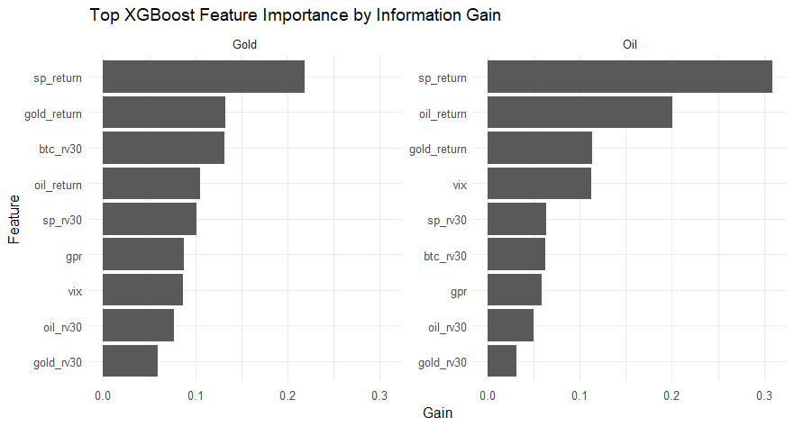
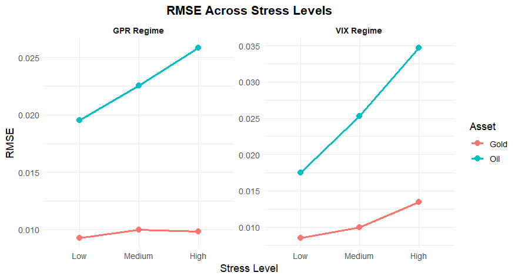

Commodity prices play a critical role in investment, risk management, and economic decision-making, yet accurately forecasting them remains challenging due to changing market conditions and structural shifts. This research investigates whether combining regime indicators with structural demand features, including global EV adoption, can improve one-step-ahead forecasting of crude oil and gold prices. By comparing statistical and machine learning models under different market environments, the study examines not only predictive accuracy but also the strengths and limitations of each approach in dynamic financial markets.

